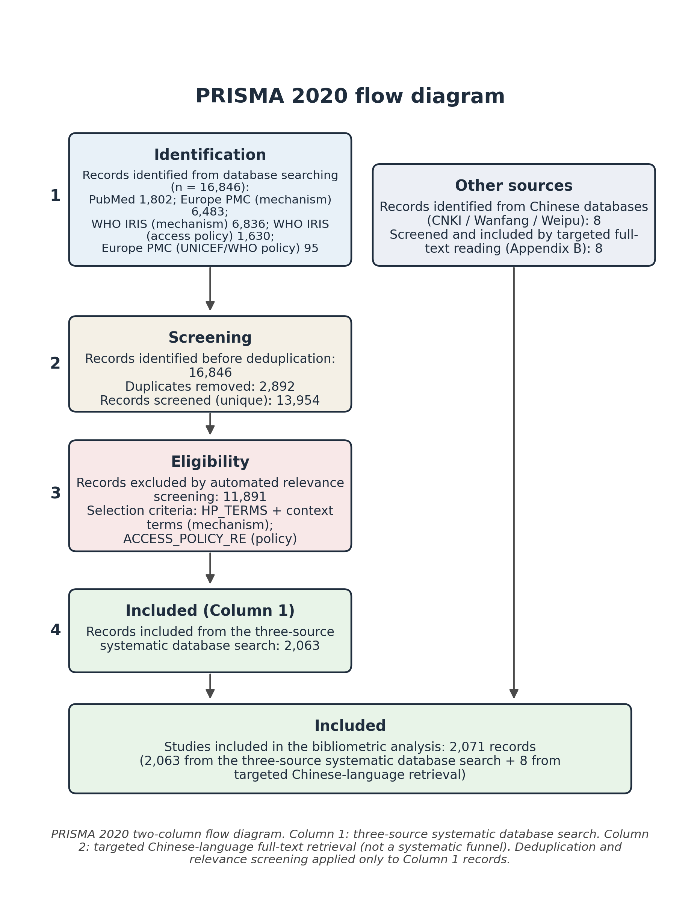
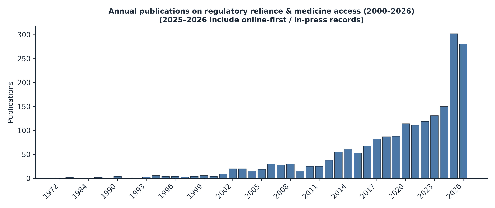
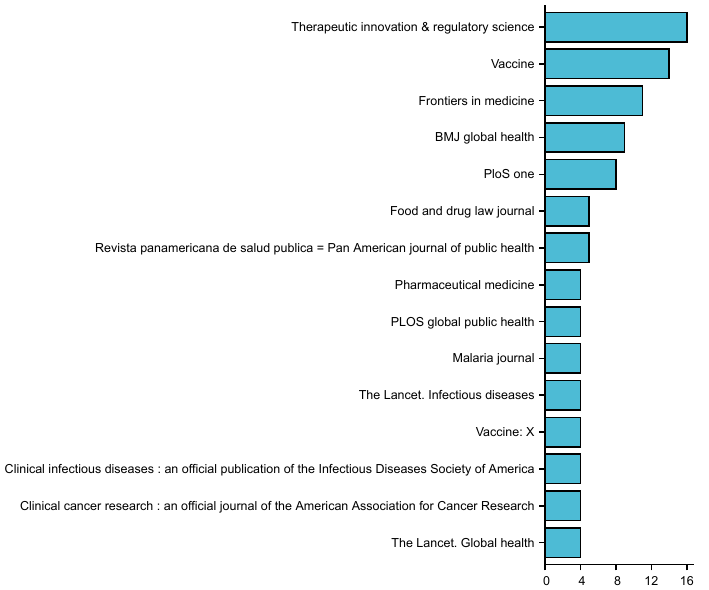
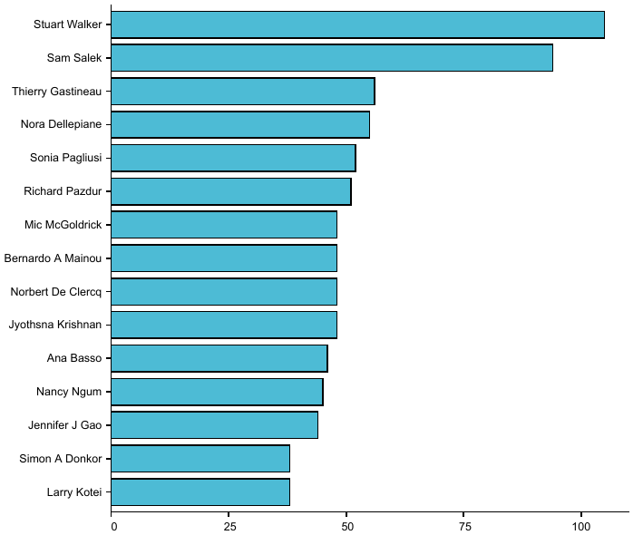
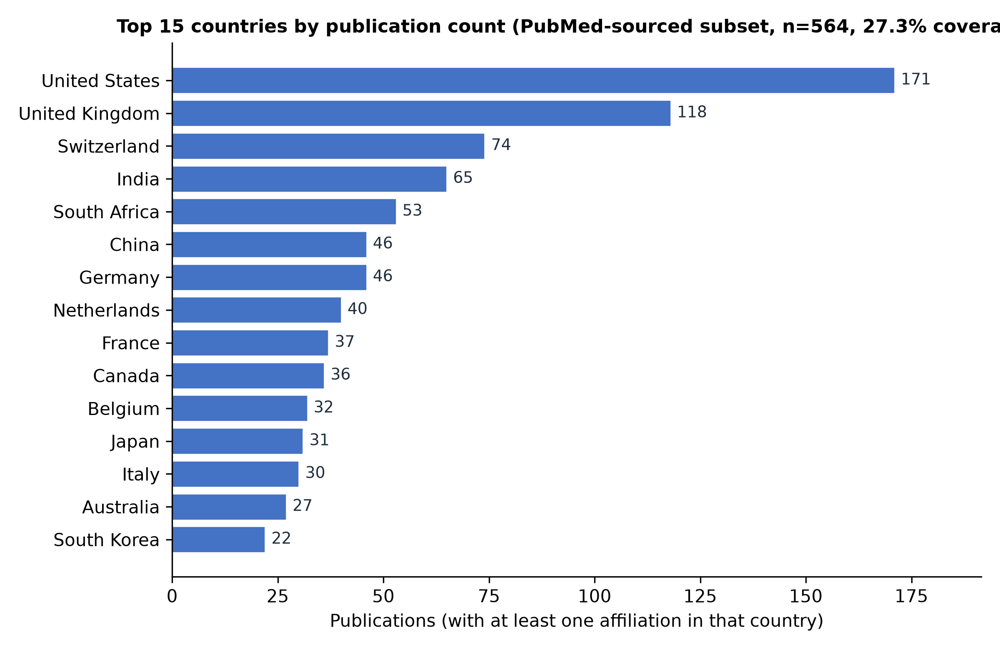
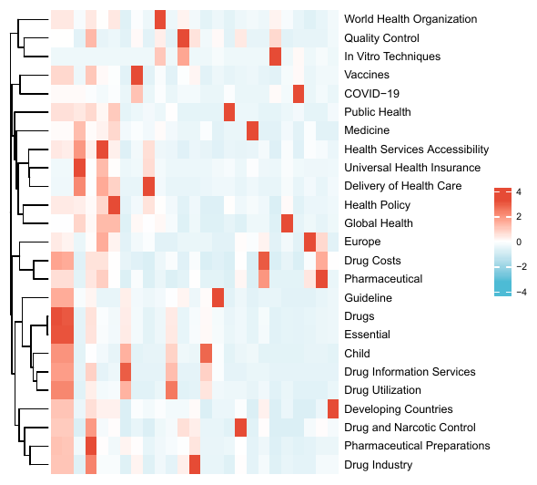
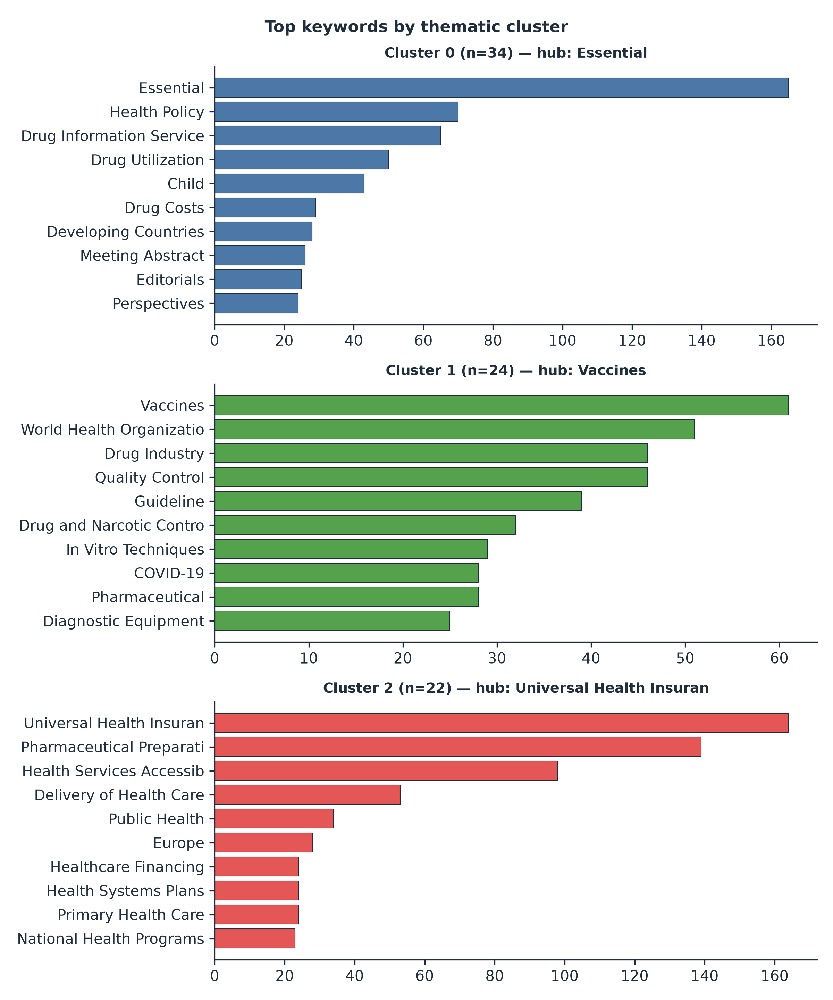
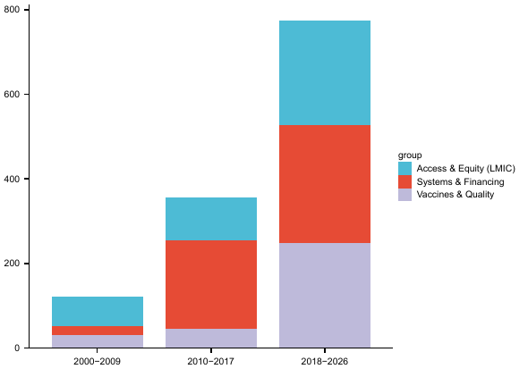
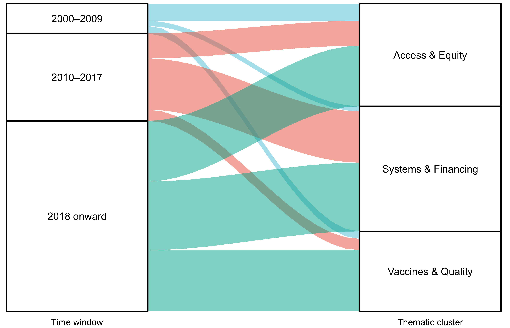

Regulatory reliance and harmonization—including WHO prequalification, regional procedures such as the African Medicines Regulatory Harmonization initiative, and the WHO Global Benchmarking Tool—have been promoted to narrow the medicines access gap in low- and middle-income countries (LMICs), yet the associated scholarship has not been systematically mapped and its implications for actual access and for regulatory-capacity equity remain unclear. This study maps the global literature on regulatory reliance for medicines access in LMICs and synthesizes its thematic structure, attending specifically to demonstrated access outcomes and to the equity and regulatory-capacity asymmetry. Following the PRISMA 2020 flow, a multi-source search of PubMed, Europe PMC, WHO IRIS and a local policy library (2000–2025) yielded 2,063 records. Bibliometric analysis covered annual publication trends, co-authorship and country collaboration networks, keyword co-occurrence and clustering, burst detection and thematic evolution, complemented by a qualitative synthesis of 40 highly cited records. Publications grew steeply (53 in 2015 to 150 in 2024) and resolved into three clusters: access, equity and essential medicines; vaccines and quality assurance; and health systems and financing. High-income countries dominate international collaboration while LMIC participation is uneven. The literature confirms that reliance mechanisms lower regulatory barriers, but evidence on access outcomes is thin, geographically and product-concentrated, and the equity asymmetry in regulatory capacity is rarely examined. Regulatory reliance is a necessary but not sufficient condition for LMIC medicine access; it must be coupled with market-shaping, local production, diagnostics and capacity strengthening, and future reliance frameworks should incorporate an equity audit.
Key messages
---
Regulatory reliance describes the practice by which a national medicines regulator voluntarily uses—in full or in part—the assessment or approval decisions of another regulator or of a trusted institution such as the World Health Organization (WHO), rather than conducting an entirely independent evaluation (WHO 2017). Reliance exists on a continuum from unilateral reliance on a stringent regulatory authority, through formal work-sharing arrangements, to structured collaborative registration procedures. At the international level, WHO prequalification (PQ) supplies an independent quality and supply-reliability signal that dozens of procurers and countries rely upon. At the regional level, initiatives such as the African Medicines Regulatory Harmonization (AMRH) programme and the nascent African Medicines Agency (AMA) seek to mutualize assessment across jurisdictions. Complementing these supply-side mechanisms, the WHO Global Benchmarking Tool (GBT) provides a maturity scale against which national regulatory systems can be assessed and strengthened.
Medicines access in LMICs is constrained not only by price and supply but by the time and cost of national marketing-authorization review. For a therapeutic that has already been assessed by a stringent authority or by WHO, a de novo national review duplicates effort and defers patient access by months or years (WHO 2017). Reliance is therefore invoked as a lever to compress time-to-market, reduce the technical burden on under-resourced agencies, and widen the approved portfolio—particularly for priority products (vaccines, antiretroviral and antimicrobial therapies, and maternal and child health medicines) where procurement is often channelled through prequalified suppliers. The COVID-19 pandemic further elevated reliance as a pragmatic emergency-response instrument.
Despite this policy prominence, three gaps limit the evidence base. First, the scholarly landscape itself has not been systematically mapped: it is unclear how fast, by whom, and around which themes the literature on regulatory reliance and medicine access has grown. Second, the literature is rich in descriptions of mechanisms but thin in demonstrated access outcomes—few studies trace reliance to measurable changes in price, availability, or treatment coverage. Third, an equity and capacity asymmetry runs through the field: reliance is frequently analysed from the perspective of high-income regulators and global procurers, while the uneven regulatory capacity of LMIC agencies and the distributional consequences for their populations are seldom interrogated.
This study maps the global literature on regulatory reliance for medicines access in LMICs and synthesizes its thematic structure. Beyond description, it interrogates the access-outcome evidence and the equity asymmetry that the field has left under-examined. By combining a bibliometric map with a qualitative synthesis of highly cited work, we offer a policy-oriented account of what reliance has—and has not—delivered for LMIC populations, and where future reliance frameworks should be steered.
---
We followed the PRISMA 2020 flow diagram (Page et al. 2021). Records were retrieved from four sources covering the period 2000–2025: (i) PubMed via the E-utilities API; (ii) Europe PMC via its REST API; (iii) the WHO Institutional Repository for Information Sharing (WHO IRIS) for grey literature and policy documents; and (iv) a local policy library of curated reports. Search strings combined terms for regulatory reliance/harmonization/prequalification with terms for medicines access, affordability, and LMICs (see the supplementary search strategy). After de-duplication, 2,063 unique records constituted the analysis corpus (Figure 1).
Eligibility required that a record address (a) a regulatory reliance, harmonization, prequalification, or benchmarking mechanism and (b) its relevance to medicines access, availability, affordability, or regulatory capacity in LMICs. Screening was performed with transparent, pre-specified automated rules implemented in `build_corpus.py`, with relevance exclusion recorded for every rejected record to preserve an auditable trail. Because the corpus intentionally includes grey literature, we distinguished peer-reviewed journal outputs from WHO IRIS policy documents in all descriptive analyses.
Bibliometric procedures were implemented in Python (Bibliometrix-style workflows and networkx). We computed: (i) annual publication trends; (ii) co-authorship networks and country collaboration networks with community detection; (iii) keyword co-occurrence matrices and clustering into thematic groups; (iv) burst detection to identify rapidly rising topics; and (v) thematic evolution across three time windows (2000–2009, 2010–2017, 2018 onward). One limitation is material: author affiliation—and hence country—was recoverable only from the PubMed subset, covering 27.3% of the corpus; country-level collaboration is therefore reported for that subset and interpreted with caution.
To move beyond mapping, we extracted the 40 most-cited, relevance-confirmed records and subjected them to thematic coding. Coding was iterative and inductive, organized around the reliance mechanism, the access pathway, and the equity implication. The resulting themes are reported in the Results and Discussion (see also the supplementary qualitative synthesis).
We acknowledge several constraints. Country coverage is partial (27.3% of records carry affiliation data). Grey literature from WHO IRIS is included by design but is heterogeneous in type and peer-review status. Searches were confined to records indexed in the four sources in English or with English metadata; non-indexed and non-English outputs may be under-represented. Retrieval concluded in 2025, so very recent outputs are partial. These limits are addressed in the Discussion.
---









---
The four-source search identified 16,846 records across five search strands (PubMed, Europe PMC × 2, WHO IRIS × 2) and a further 50 records from the local policy library. After removing 2,892 duplicates, 13,954 unique database records remained; 11,941 were excluded at screening for not meeting the relevance criteria, leaving 2,013 database records. Together with the 50 local records, the analysis corpus comprised 2,063 unique records (Figure 1). Of these, the large majority are peer-reviewed journal articles, with a purposeful minority of WHO IRIS policy and technical documents retained as grey literature; we distinguish the two in all descriptive analyses below.
Annual output grew from 4 publications in 2000 to 53 in 2015 and 150 in 2024 — a nearly threefold increase over the final decade of the window (Figure 2). Growth accelerated after 2013 and again during 2020–2024. Counts for 2025 are partial (retrieval concluded in 2025), and a tail of records carries forward publication dates into 2026; these are retained in the corpus but are not interpreted as complete-year trends.
The literature is dispersed across regulatory science, vaccinology, and global-health outlets. The most productive peer-reviewed journals were Therapeutic Innovation & Regulatory Science (n = 16), Vaccine (n = 14), Frontiers in Medicine (n = 11), BMJ Global Health (n = 9), PLOS ONE (n = 8), Revista Panamericana de Salud Pública (n = 5), and Food and Drug Law Journal (n = 5), followed by The Lancet Global Health, Pharmaceutical Medicine, PLOS Global Public Health, and Malaria Journal (n = 4 each) (Figure 3). The presence of both specialist regulatory-science titles and broad global-health journals reflects the cross-disciplinary character of the field.
Authors most central to the co-authorship network (by collaboration degree) were Stuart Walker (105), Sam Salek (94), Thierry Gastineau (56), Nora Dellepiane (55), Sonia Pagliusi (52), Richard Pazdur (51), Jyothsna Krishnan (48), Bernardo A. Mainou (48), Mic McGoldrick (48), and Norbert De Clercq (48) (Figure 4). These individuals anchor distinct research communities — regulatory science and pharmacoepidemiology, vaccine development, and medicines-policy scholarship — rather than a single consolidated network.
Country publication frequency (recoverable for 27.3% of the corpus, i.e., the PubMed-subset records carrying affiliation data) was led by the United States (171), United Kingdom (118), and Switzerland (74), followed by India (65) and South Africa (53), Germany (46), China (46), the Netherlands (40), France (37), Canada (36), Belgium (32), Japan (31), and Italy (30) (Figure 5). Hong Kong, Macau, and Taiwan are counted within China. Among LMICs, India and South Africa are by far the most prominent collaborating countries, with a second tier of Ghana (17), Tanzania (17), Kenya (15), Zimbabwe (15), Uganda (14), and Nigeria (9). High-income regulators and procurers thus dominate international collaboration, while LMIC participation is concentrated in a few middle-income hubs; the 27.3% affiliation-coverage ceiling means these counts describe the subset for which addresses were recoverable and should be read with caution.
Keyword co-occurrence clustering resolved the literature into three thematic groups (Figure 6 heatmap; cluster composition in Figure 7):
Burst detection identified topics rising fastest in the recent period. The strongest burst scores were Universal Health Insurance (56.0), Health Services Accessibility (36.0), Health Policy (33.0), Vaccines (24.5), Delivery of Health Care (21.5), World Health Organization (20.5), Pharmaceutical Preparations (19.5), Essential (19.5), Quality Control (16.0), In Vitro Techniques (14.5), and COVID-19 (14.0). The burst structure confirms a shift from early essential-medicines and affordability framing toward health-systems and policy language, on the one hand, and vaccines, quality assurance, and pandemic-response topics, on the other.
Across the three windows, the field's centre of gravity moved markedly (Figure 8; inter-window flow in Figure 9). In 2000–2009 the literature was small and anchored on Essential (40), Drug Costs (9), Drug Utilization (8), and Guideline (12). In 2010–2017 it expanded around Universal Health Insurance (85), Pharmaceutical Preparations (52), Health Services Accessibility (33), and Europe (10). In 2018 onward, Vaccines rose from 3 to 51, World Health Organization from 2 to 46, Health Policy from 0 to 59, Quality Control from 2 to 34, In Vitro Techniques from 0 to 26, and COVID-19 appeared de novo (28). The trajectory shows maturation from an essential-medicines/affordability literature toward an explicit vaccines-quality-and-pandemic-response literature and, in parallel, a health-systems and policy framing of reliance.
Coding the 40 most-cited, relevance-confirmed records reproduced the same three themes identified bibliometrically. Access, equity, and LMIC medicines (Cluster 1) is represented by work on essential medicines for universal health coverage (Wirtz et al. 2017), market-shaping approaches to biopharmaceutical innovation (Douglass et al. 2018; Yang et al. 2023), the suitability of stringent-review procedures for low-income-country registration (Cameron et al. 2009), and COVID-19 vaccine and therapeutics justice (Wouters et al. 2021). Vaccines and quality assurance (Cluster 2) is represented by the 25-year review of the WHO vaccines prequalification programme (Dellepiane and Wood 2015), the global regulatory landscape for combined vaccines (He et al. 2025), and COVID-19 vaccine regulatory pathways (Wouters et al. 2021). Health systems and financing (Cluster 3) is represented by appraisals of the African Medicines Agency (Ngum et al. 2023; Ndomondo-Sigonda et al. 2023), the WHO Global Benchmarking Tool as a capacity-strengthening instrument (Khadem Broojerdi et al. 2020; Guzman et al. 2020), regional reliance and work-sharing procedures (Xu et al. 2022; Vaz et al. 2022; Geraci et al. 2024), and market-shaping successes in hepatitis C access (Douglass et al. 2018).
Across the three themes, reliance mechanisms — WHO prequalification, regional harmonization (notably the African Medicines Regulatory Harmonization initiative), the Global Benchmarking Tool, and the WHO Collaborative Registration Procedure — are repeatedly shown to lower regulatory barriers and compress review timelines. However, the highly cited literature is markedly richer in accounts of mechanisms than in evidence that reliance changed access outcomes: demonstrated effects on price, product availability, or treatment coverage are few, product-concentrated (vaccines and a small set of priority therapeutics), and geographically concentrated in a handful of middle-income countries. The uneven regulatory capacity of LMIC agencies, and the distributional consequences for their populations, is seldom the analytical centre of even the most influential papers.
---
This bibliometric review and thematic synthesis maps two decades of scholarship on regulatory reliance for medicines access in LMICs. The field has grown nearly threefold in the last decade, is led by high-income regulators and procurers, and organizes around three stable themes — access and equity, vaccines and quality, and health systems and financing. Recent bursts and thematic evolution show a pivot toward health-systems and policy language and toward vaccines, quality assurance, and COVID-19. The qualitative synthesis confirms that reliance mechanisms are well documented as barrier-lowering instruments, but that evidence linking them to measurable access outcomes, and to equitable regulatory capacity, remains thin.
The bibliometric pattern is consistent with the mechanistic literature: reliance and harmonization are invoked precisely because de novo national review duplicates effort and defers access. The highly cited corpus shows reliance — through prequalification, regional procedures, and benchmarking — repeatedly shortening the path from assessment to authorization. Yet compressing regulatory review addresses only one link in a longer access chain. Price, supply, procurement channels, and health-system absorptive capacity determine whether a faster authorization reaches patients. The relative scarcity of access-outcome studies in even the most influential literature suggests the field has optimised the upstream regulatory instrument while under-measuring its downstream effect — a gap the Discussion (4.3) elaborates.
Few highly cited works trace reliance to changes in price, availability, or treatment coverage, and those that do concentrate on vaccines and a narrow set of priority products in a few middle-income settings. This concentration is plausibly real — vaccines and a small number of ARV/antimicrobial therapies have the procurement infrastructure (UN agencies, Gavi, global funds) that makes reliance actionable — but it leaves large therapeutic areas and the poorest settings under-evidenced. A bibliometric map cannot itself establish causation, but the near-absence of outcome-language in the burst and cluster structure is itself a finding: the field's discourse is mechanism-rich and outcome-poor.
Thematic evolution shows an early and persistent health-systems and financing cluster, yet the equity implication of whose regulatory capacity is strengthened is rarely centred. High-income agencies and global procurers dominate collaboration; LMIC agencies appear mainly as recipients of reliance or as middle-income hubs (India, South Africa). Reliance can entrench dependence on external assessment if it is not coupled with domestic capacity strengthening — a risk the Global Benchmarking Tool and African Medicines Agency literature names but the broader corpus treats as peripheral. We read this asymmetry as the field's most important under-examined question.
If reliance is necessary but not sufficient for access, then frameworks should pair it with market-shaping, local production, diagnostics, and capacity strengthening — and should make equity explicit. We propose that future reliance frameworks incorporate an equity audit: an ex-ante assessment of who gains faster access, whose regulatory capacity is built, and who remains dependent. Such an audit would convert the field's mechanism-rich evidence into accountable access policy.
Strengths include the multi-source design (databases plus WHO IRIS grey literature plus a local policy library), the PRISMA 2020 flow, and the triangulation of bibliometric and qualitative evidence. Limitations are those of the corpus and method. Affiliation data covered only 27.3% of records, so country collaboration describes a subset and may under-represent LMIC authorship recorded without structured addresses. Searches were confined to English-language and indexed records, risking under-representation of non-English and non-indexed outputs. Citation-based indicators favour already-visible, English, high-income-linked work and can over-weight review and position papers; the qualitative synthesis therefore drew on a relevance-confirmed subset rather than raw citation counts alone. Very recent (2025–2026) records are partially indexed. These limits are inherent to bibliometric review and are disclosed so effect sizes are not over-read.
---
Regulatory reliance for medicines access in LMICs has matured into a recognizable, rapidly growing, and thematically coherent field, but one whose scholarship is mechanism-rich and outcome-thin. Reliance — via prequalification, regional harmonization, benchmarking, and collaborative registration — is a necessary but not sufficient condition for LMIC medicine access: it lowers regulatory barriers without, by itself, guaranteeing price, supply, or coverage. The field's principal blind spot is the equity and capacity asymmetry it has left under-examined. Future reliance frameworks should couple reliance with market-shaping, local production, diagnostics, and capacity strengthening, and should adopt an explicit equity audit. Bibliometric and thematic mapping of this kind can orient that agenda by showing not only where the literature is dense, but where — on access outcomes and regulatory equity — it is conspicuously silent.
---
African Union. Treaty for the Establishment of the African Medicines Agency. Malabo: African Union; 2019.
Aria M, Cuccurullo C. bibliometrix: An R-tool for comprehensive science mapping. Journal of Informetrics. 2017;11(4):959–975. https://doi.org/10.1016/j.joi.2017.08.007
Barton I, Avanceña ALV, Gounden N, Anupindi R. Unintended consequences and hidden obstacles in medicine access in Sub-Saharan Africa. Frontiers in Public Health. 2019;7:342. https://doi.org/10.3389/fpubh.2019.00342
Cameron A, Ewen M, Ross-Degnan D, Ball D, Laing R. Medicine prices, availability, and affordability in 36 developing and middle-income countries: a secondary analysis. The Lancet. 2009;373(9659):240–249. https://doi.org/10.1016/S0140-6736(08)61762-6
Cobo MJ, López-Herrera AG, Herrera-Viedma E, Herrera F. Science mapping software tools: Review, analysis, and cooperative study among tools. Journal of the American Society for Information Science and Technology. 2011;62(7):1382–1402. https://doi.org/10.1002/asi.21525
Dellepiane N, Wood D. Twenty-five years of the WHO vaccines prequalification programme (1987–2012). Vaccine. 2015;33(1):52–61. https://doi.org/10.1016/j.vaccine.2013.11.066
Donthu N, Kumar S, Mukherjee D, Pandey N, Lim WM. How to conduct a bibliometric analysis: An overview and guidelines. Journal of Business Research. 2021;133:285–296. https://doi.org/10.1016/j.jbusres.2021.04.070
Douglass CH, Pedrana A, Lazarus JV, 't Hoen EFM, Hammad R, Baptista Leite R, et al. Pathways to ensure universal and affordable access to hepatitis C treatment. BMC Medicine. 2018;16:169. https://doi.org/10.1186/s12916-018-1162-z
EFPIA. ASEAN Joint Assessment (AJA) for Pharmaceuticals – How should it evolve? Position Paper. 28 May 2024.
Geraci G, Smith R, Hansford A, Johnsson E, Critchley H, Abi Khaled L, et al. Industry Perceptions and Experiences with the Access Consortium New Active Substance Work-Sharing Initiative (NASWSI): Survey Results and Recommendations. Therapeutic Innovation & Regulatory Science. 2024;58:557–566. https://doi.org/10.1007/s43441-024-00624-7
Guzman J, O'Connell E, Kikule K, Hafner T. The WHO Global Benchmarking Tool: a game changer for strengthening national regulatory capacity. BMJ Global Health. 2020;5(8):e003181. https://doi.org/10.1136/bmjgh-2020-003181
He X, Pu Y, Li Z, Huan S, Yang Y. The global regulatory landscape for combined vaccines: A comparative case study of registration strategies for diphtheria-tetanus-pertussis-containing vaccines. Vaccine. 2025;54:127017. https://doi.org/10.1016/j.vaccine.2025.127017
Hu Y, Wang Z, Zhou S, Yang J, Chen Y, Wang Y, et al. Redefining Debt-to-Health, a triple-win health financing instrument in global health. Globalization and Health. 2024;20:39. https://doi.org/10.1186/s12992-024-01043-x
International Coalition of Medicines Regulatory Authorities (ICMRA). Statement from Global Medicines Regulators on the Value of Regulatory Reliance. 2017. https://icmra.info/drupal/index.php/en/strategicinitatives/reliance/statement
Khadem Broojerdi A, Sillo HB, Ostad Ali Dehaghi R, Ward M, Refaat M, Parry J. The WHO Global Benchmarking Tool: an instrument to strengthen medical products regulation and promote universal health coverage. Frontiers in Medicine (Lausanne). 2020;7:457. https://doi.org/10.3389/fmed.2020.00457
Kleinberg J. Bursty and hierarchical structure in streams. Data Mining and Knowledge Discovery. 2002;7(4):373–397. https://doi.org/10.1023/A:1024940629314
Liu Z, Wang Z, Xu M, Ma J, Sun Y, Huang Y. The priority areas and possible pathways for health cooperation in BRICS countries. Global Health Research and Policy. 2023;8:36. https://doi.org/10.1186/s41256-023-00318-x
Ndomondo-Sigonda M, Miot J, Naidoo S, Ambal A, Dodoo A, Mkandawire H. The African Medicines Regulatory Harmonization initiative: Progress to date. Medical Research Archives. 2018.
Ndomondo-Sigonda M, Azatyan S, Doerr P, Agaba C, Harper KN. Best practices in the African Medicines Regulatory Harmonization initiative: Perspectives of regulators and medicines manufacturers. PLOS Global Public Health. 2023;3(4):e0001651. https://doi.org/10.1371/journal.pgph.0001651
Ngum N, Ndomondo-Sigonda M, Walker S, Salek G. Regional regulatory harmonisation initiatives: Their potential contribution to the newly established African Medicines Agency. Regulatory Toxicology and Pharmacology. 2023;105497. https://doi.org/10.1016/j.yrtph.2023.105497
Page MJ, McKenzie JE, Bossuyt PM, Boutron I, Hoffmann TC, Mulrow CD, et al. The PRISMA 2020 statement: an updated guideline for reporting systematic reviews. BMJ. 2021;372:n71. https://doi.org/10.1136/bmj.n71
Qiao J, Zhan S, Ren M, Wang H, Huang Y, Zhang Z, et al. A new phase of China-ASEAN health cooperation: the China-ASEAN Beijing Declaration on Cooperation in Innovation of Health Products and Technologies. Global Health Research and Policy. 2025;10:3. https://doi.org/10.1186/s41256-024-00401-x
Ratanawijitrasin S, Wondemagegnehu E. Effective drug regulation: a multicountry study. Geneva: World Health Organization; 2002.
Rägo L, Santoso B. Drug regulation: history, present and future. In: van Boxtel CJ, Santoso B, Edwards IR, eds. Drug Benefits and Risks: International Textbook of Clinical Pharmacology. 2nd ed. Amsterdam: Elsevier; 2008.
Sun Y, Cui Y, Huang Y, Xu M. Access to antimalarial drugs in the Asia-Pacific region during health emergency: a multinational cross-sectional investigation between 2020 and 2022. Global Health Research and Policy. 2025;10:66. https://doi.org/10.1186/s41256-025-00454-6
United Nations. The Sustainable Development Goals Report 2023. New York: United Nations; 2023.
Vaz A, Roldão Santos M, Gwaza L, Mezquita González E, Pajewska Lewandowska M, Azatyan S, et al. WHO collaborative registration procedure using stringent regulatory authorities' medicine evaluation: reliance in action? Expert Review of Clinical Pharmacology. 2022. https://doi.org/10.1080/17512433.2022.2037419
World Health Organization. Regulatory reliance: a global imperative. WHO Drug Information. 2017;31(1):17–21.
World Health Organization. The selection and use of essential medicines: report of the WHO Expert Committee, 2019. Geneva: World Health Organization; 2019.
World Health Organization. World health statistics 2023: monitoring health for the SDGs. Geneva: World Health Organization; 2023.
Wirtz VJ, Hogerzeil HV, Gray AL, Bigdeli M, de Joncheere K, Ewen M, et al. Essential medicines for universal health coverage. The Lancet. 2017;389(10067):403–476. https://doi.org/10.1016/S0140-6736(16)31599-9
Wouters OJ, Shadlen KC, Salcher-Konrad M, Pollard AJ, Larson HJ, Teyssou E, et al. Challenges in ensuring global access to COVID-19 vaccines: production, distribution, and strain diversity. The Lancet. 2021;397(10278):1023–1034. https://doi.org/10.1016/S0140-6736(21)00306-8
Xu M, Zhang L, Feng X, Zhang Z, Huang Y. Regulatory reliance for convergence and harmonisation in the medical device space in Asia-Pacific. BMJ Global Health. 2022;7:e009798. https://doi.org/10.1136/bmjgh-2022-009798
Xu M, Hu Y, Lu S, Idris MA, Zhou S, Yang J, et al. Seasonal malaria chemoprevention in Africa and China's upgraded role as a contributor: a scoping review. Infectious Diseases of Poverty. 2023;12:63. https://doi.org/10.1186/s40249-023-01115-x
Yang J, Feng X, Zhou S, Zhang L, Hu Y, Chen Y, et al. Evolving market-shaping strategies to boost access to essential medical products in developing countries with HIV self-testing as a case study. Global Health Research and Policy. 2023;8:26. https://doi.org/10.1186/s41256-023-00310-5
Yang J, Yu X, Yao Y, Zhao W, Chen Y, Wang Z, et al. Analysis of the impact of national centralized volume-based procurement drug policy on the market dynamics of tuberculosis drugs. BMC Health Services Research. 2026;26:756. https://doi.org/10.1186/s12913-026-14668-y
Zhou S, Feng X, Hu Y, Yang J, Chen Y, Bastow J, et al. Factors associated with the utilization of diagnostic tools among countries with different income levels during the COVID-19 pandemic. Global Health Research and Policy. 2023;8:45. https://doi.org/10.1186/s41256-023-00330-1
---
Authors, affiliations, and the corresponding-author email are to be filled by the authors. The blocks below resolve the four PRISMA 2020 items 24a, 25, 26, 27.
Title page. [Author 1 full name], [Affiliation, city, country]; [Author 2 …]; [Corresponding author: name, email].
Funding. This research received no specific grant from any funding agency in the public, commercial, or not-for-profit sectors.
Competing interests. The authors declare no competing interests.
Registration. This bibliometric review was not registered in PROSPERO. The review protocol is available as supplementary material (see "Supplementary material" below).
Data and code availability. The bibliometric corpus was derived from public sources (PubMed, Europe PMC, WHO Institutional Repository for Information Sharing) and a local policy library. The derived 2,063-record metadata table, the PRISMA transparency file (`prisma_transparency.json`), and the analysis scripts are available in a public repository [GitHub: https://github.com/kongdeyu0819-rgb/global-health-regulatory-bibliometrics; Zenodo: TODO_DOI]. The local policy-library subset is available from the corresponding author on reasonable request where permissions allow. Search strategies and the qualitative-synthesis coding framework are provided as supplementary material.
Acknowledgements. [To be added.]
Supplementary material. (i) Full search strategies for all sources; (ii) the qualitative-synthesis coding framework for the 40 most-cited records; (iii) the country publication-frequency bar chart (Figure 5).